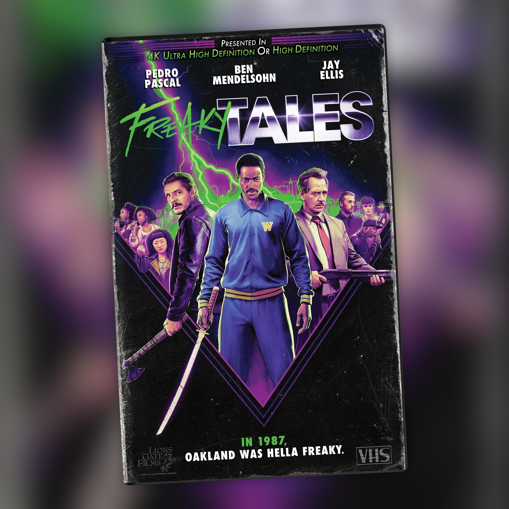

Freaky Tales (2024)
Una carta de amor salvaje al Oakland de los ochenta que no se preocupa mucho por explicarse

Freaky Tales son cuatro historias entrelazadas en el Oakland de 1987, y desde el arranque queda claro que la fidelidad histórica le importa bastante poco. Anna Boden y Ryan Fleck mezclan punk, hip hop, acción y venganza, y en algún momento meten una dosis de fantasía que no ves venir. Es una antología pulp que se mueve entre el cine de barrio y la estética grindhouse, con toda la actitud que eso implica: cada historia tiene su propio tono, su propia paleta y su propia forma de resolver las cosas a golpes.
Y luego está el reparto, que tiene de todo. Pedro Pascal y Ben Mendelsohn se lo toman como lo que es, una película que no busca ponerse demasiado seria sino pasárselo bien con el material, y Dominique Thorne (la protagonista de Ironheart) hace lo mismo en su segmento. Jay Ellis y Normani también se meten de lleno en el rollo pulp, y hay un cameo de Tom Hanks que llega y se va sin pedir permiso, como corresponde a una película que va cambiando de registro cada veinte minutos.
Uno de esos segmentos está construido alrededor de Sleepy Floyd, base real de los Warriors que en 1987 metió 51 puntos en un partido de playoffs contra los Lakers. La película coge esa hazaña de verdad y la convierte en excusa para una historia de venganza con final directamente fantástico: Floyd salvando el barrio a base de mamporros y buenas intenciones. Es de esas escenas que, aunque sepas que va a pasar algo así, cuando llega funciona igual. Ya es historia del cine raro.
Si te va lo excéntrico, lo callejero y lo ochentero, aquí tienes 107 minutos de eso sin demasiados filtros. Cambia de tono, de género y de protagonistas cada poco, así que en algún momento puede dar la sensación de estar viendo cuatro cortos con la misma banda sonora de fondo más que una película con una sola columna vertebral. Pero si conectas con esa idea de antología gamberra, cada historia aporta lo suyo y ninguna se hace larga.
No busca ser perfecta ni falta que le hace. Va a lo suyo, cambia de género cuando le apetece y con eso ya cumple.
Ficha técnica
- Título original: Freaky Tales
- Dirigida por: Anna Boden, Ryan Fleck
- Guion: Anna Boden, Ryan Fleck
- Reparto principal: Pedro Pascal, Ben Mendelsohn, Dominique Thorne, Jay Ellis, Normani, Tom Hanks
- Año: 2024
- Duración: 107 min
- Dónde verla: SkyShowtime y Movistar Plus+